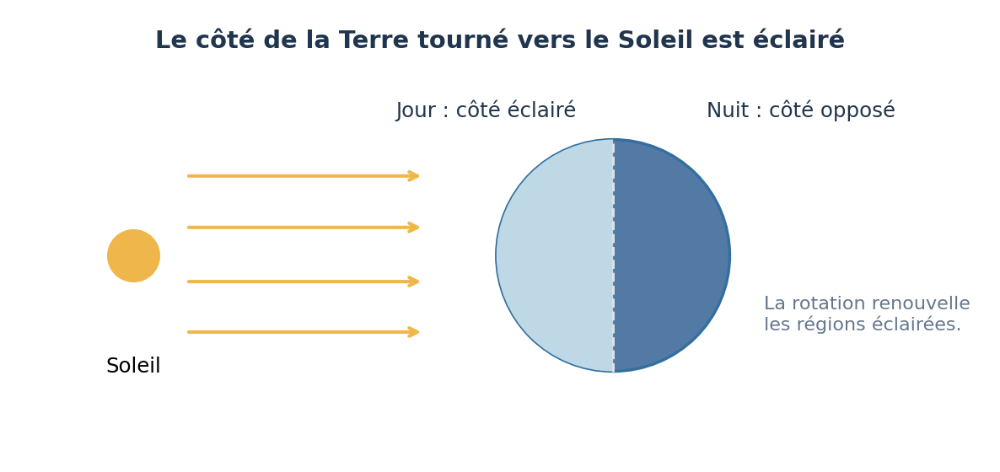
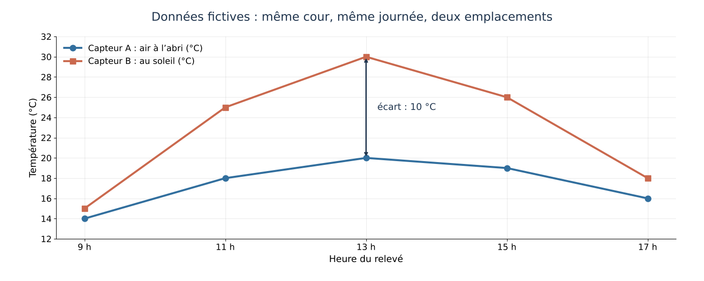

Pourquoi la Terre accueille-t-elle la vie ? Lumière, rotation, saisons et mesures
La Terre éclairée, en mouvement et habitable
✦ 8 séances◷ 55 min par séance◉ Applicable en 6e en 2026-2027

Ce que je vais apprendre
Question de départ : Comment la lumière du Soleil, la rotation et l’inclinaison de la Terre façonnent-elles nos journées, nos saisons et notre climat ?
Utiliser un modèle (globe et lampe) et en dire les limites.
Lire des éphémérides et un tableau de données ; construire un graphique daté avec unités.
Concevoir un protocole qui ne fait varier qu’un facteur.
Argumenter à partir de données en distinguant météo et climat.
LES CONNAISSANCES
4 questions scientifiques
Chaque question s’appuie sur une observation, une expérience ou des données, puis sur un modèle dont on dit les limites.
QUESTION 01
Pourquoi la Terre est-elle une planète où nous pouvons vivre ?
Diamètres à la même échelle ; les distances ne sont pas représentées.
À retenir
La Terre réunit de l’eau liquide, une atmosphère et des températures compatibles avec la vie que nous connaissons. Ces conditions dépendent de plusieurs facteurs, pas seulement de la distance au Soleil.
Expérience : Comparer trois fiches de données et chercher quelles conditions permettent la présence durable d’eau liquide.
La Terre tourne sur elle-même en environ 24 heures : c’est la rotation. Elle explique l’alternance du jour et de la nuit. Le déplacement du Soleil dans le ciel est un mouvement apparent. La Terre tourne autour du Soleil en environ un an : c’est la révolution.
Expérience : Faire tourner un globe devant une lampe fixe ; suivre une gommette placée sur Vienne.
L’axe de la Terre reste orienté dans la même direction. Schéma non à l’échelle : la distance Terre-Soleil varie peu et n’explique pas les saisons.
À retenir
Les saisons s’expliquent par l’inclinaison de l’axe de la Terre, qui garde la même direction pendant l’année. En été, le Soleil monte plus haut dans le ciel et les jours sont plus longs : le sol reçoit plus d’énergie. Les saisons sont inversées entre les hémisphères Nord et Sud.
Expérience : Incliner un globe d’environ 23° et le faire tourner autour d’une lampe sans changer la direction de son axe ; observer la zone éclairée de l’hémisphère Nord.
Pourquoi des mesures de quelques jours ne suffisent-elles pas à décrire le climat ?

Données fictives de la séance 5 : à 13 h, le capteur au soleil indique 10 °C de plus que l’air à l’abri.
À retenir
La météo décrit l’atmosphère à court terme ; le climat se décrit sur de longues durées, en général 30 ans. Des mesures ne sont comparables que si elles suivent le même protocole. Quelques jours de mesures ne permettent pas de conclure sur le climat.
Expérience : Comparer deux capteurs : l’un en plein soleil, l’autre à l’ombre dans un abri ; chercher l’origine des écarts.
Construire une mini-station de mesure fiable et argumenter à partir de données
Deux groupes ont relevé la température de la cour au même moment : 20 °C pour l’un, 30 °C pour l’autre. Le premier capteur était à l’ombre, le second en plein soleil.
Mission : Définir un protocole commun, fabriquer un abri ventilé pour le capteur, réaliser des relevés datés sur cinq jours, puis dire ce que ces relevés permettent de conclure, et ce qu’ils ne permettent pas de conclure sur le climat.
Contraintes
relevés à heures fixes pendant cinq jours ; date, heure et lieu notés
capteur placé dans un abri ventilé, à l’ombre, à environ 1,5 m du sol
unités et graphique lisibles
basse tension uniquement ; aucun bricolage sur le secteur
ne pas prétendre décrire le climat à partir de cinq jours
Production finale : Abri du capteur, tableau et graphique des relevés, compte rendu argumenté.
La mission est réussie si…
Le protocole fixe l’heure, l’emplacement et l’instrument.
Le graphique a un titre, des axes, des unités et des dates.
La conclusion distingue météo (nos cinq jours) et climat (séries longues).
INTERDISCIPLINARITÉ
Ce que l’on travaille aussi dans les autres disciplines
Discipline
Lien
Séances
Physique-chimie et SVT
Co-enseignement de la 6e : lumière, mouvements de la Terre (physique-chimie) ; conditions de la vie, climat (SVT).
Toute la séquence
Mathématiques
Durées, tableaux, graphiques, moyenne, tableur.
Séances 3, 7, 8
Géographie
Latitude de Vienne, saisons et climats du monde.
Séances 3, 8
Éducation au développement durable
Réchauffement climatique récent : ce que disent les données.